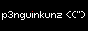

p3nguin-kun's site
rewrite this website because my old website sucks
Hi everyone, i'm p3nguin-kun. I use this website to introduce myself and write some blogs.
About me
- he/him
- student, programmer, *nix and foss enthusiast, tech paranoid, weebs? (idk).
- use archlinux as my main os, remove all bloats and use tui apps instead of gui apps. i use tails and whonix too.
- i don't use proprietary software and 3rd services like google, microsoft or apple, just use foss(and libre) software and privacy frondends (like invidious, pixivfe, ...) (except spotify).
- know a bit of c/c++, python, bash script, html (it's not a programming language but ok), css, ...
- use english and vietnamese as my main language. i'm also learning japanese.
Projects
Some projects which you shouldn't use it:
- XenonLinux: An Arch-based Linux distro that focus on simplicity, sustainability and user freedom. (WIP)
- penguinRice: A script that rice your Linux/*nix system.
- penguinFox: Firefox with better UI, better privacy and security.
- mvim: Minimal and lightweight NeoVim config
- macaroni: A simple base16 colorscheme inspired by macaroni penguin.
- lmaofetch: Simple system fetch, written in bash.
- smolfetch: Super simple system fetch, written in bash.
- lite websites: List of lite websites for 2G/3G or poor internet connection.
- badapple-python: BadApple in your terminal.
Contact
You can contact me by using the services below
Other
Blogs
Here: Blogs
